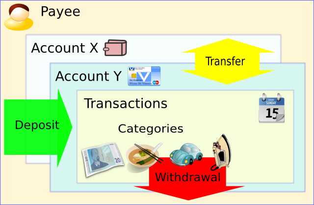

| Languages: | French | Italian | Russian | Spanish | Polish |
Money Manager Ex (MMEX) is a personal money management system, for any one starting out in keeping track of their money, and their spending habits. Based on simple principles, thus allowing anyone with little, to no knowledge of finance and general book keeping, to successfully manage their money. MMEX does this by attempting to models the real financial world, to help us (the user) maintain our personal finances. The Money Manager EX Software, is Open Source, and free to use.
The primary goal of MMEX is to simplify the process of tracking financial information, in an easy to use program that can be used as regular as necessary, to help us keep track of where our money comes from and more importantly, where our money goes, in order to make better financial decisions for our future.
Think of Money Manager Ex as a computer checkbook which enables you to balance your accounts, organize, manage and generate reports for your finances.
It is also a great way to keep abreast of your financial worth.
The purpose of this manual is to give you (the user) some basic instructions for using MMEX. This instruction manual will evolve as the program evolves. So check the help system with each update and see what's new and how to better utilize MMEX.
Becoming organized financially requires some amount of discipline. Financial management can become complicated when there is no clear understanding of how much money we are getting, regarded as income as opposed to our expenses which is how much money we spend. Debt usually results when our cash flow is restricted because our expenses exceed our income. Then we need to borrow money to maintain our cash flow to enable us to purchase our necessary items.
Then we need to borrow money to maintain our cash flow to enable us to purchase our necessary items.
The first step towards better Financial Health, is to maintain good financial records. It is only when we have a clear understanding of where our money goes, that we can make an informed decision of where to cut back on our expenses when our cash flow becomes tight. If we do need to borrow money, we can then better manage our debts as well.
Did you realize you spent $600 in buying DVD movies last year? How many times did you watch them? Do you think now that the $600 would have been better spent on the unexpected maintenance on the auto that came up yesterday? Of course there is no right or wrong answer to how you should spend your money. After all, it is you who earned that money and the right to spend it whichever way you see fit. But you can always make your money work harder for you.
Here's where personal finance software comes in. They help you slice/dice the financial data to give you better insight into what is going on. Always remember the software can only be as good as the data it has to process. Garbage In Garbage Out. But if you have started thinking of even using Personal finance software, you are well on your way to making every dollar count.
Read on how to work with Money Manager Ex.
Money Manager EX models the real world to help us maintain our personal finances.
Generally we receive money from someone for a service we provide, or a product that we sell. This is regarded as Income or as a Deposit to our system. When we purchase an item or use a service, the money that we spend is regarded as an expense or Withdrawal to our system. In MMEX, the people that give us money or receive our money are regarded as the Payees of the system.
As we hopefully do not spend all the money we receive, we would obviously need a place to keep our money. This is generally, some financial institution, or several institutions or in our pocket. MMEX tags these places as Accounts.
When we spend or receive money, we see this as a transaction>, and the reason for our income or expense is our category. There will be times where we need to transfer money from one place to another, such as a withdrawal from an ATM, and this type of transaction is known as a transfer.
| This can be simplified as shown in the following diagram: |  |
One other important thing to consider is the currency we use to perform the transactions.
With all of these things to keep track of, MMEX uses a database to store and connect all these entities together.
The database that MMEX generates, known as the .mmb file, becomes an important file for you to maintain. Depending on circumstances, security features such as encryption can be employed, which is recognized as a .emb file. This is where we can attach a password to the database, and will require a password every time MMEX is opened.
When encrypting your database, Don't forget your password.
As with any computer system, the data we produce is important to us, and therefore need to safeguard against system malfunction. MMEX has a backup system where it can produce a dated copy when the database is opened, and/or produce a dated copy of the database when changes have been detected. Up to 4 backups are maintained for each database when the system is initialized and/or when system changes have been detected, and the system shuts down.